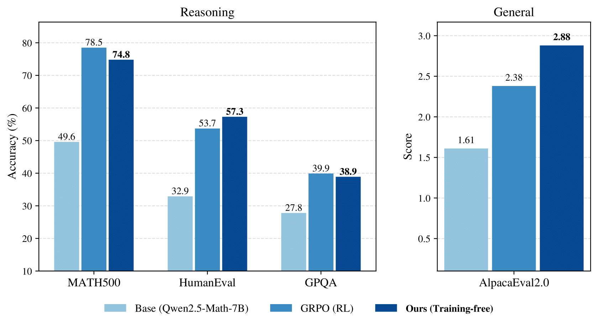
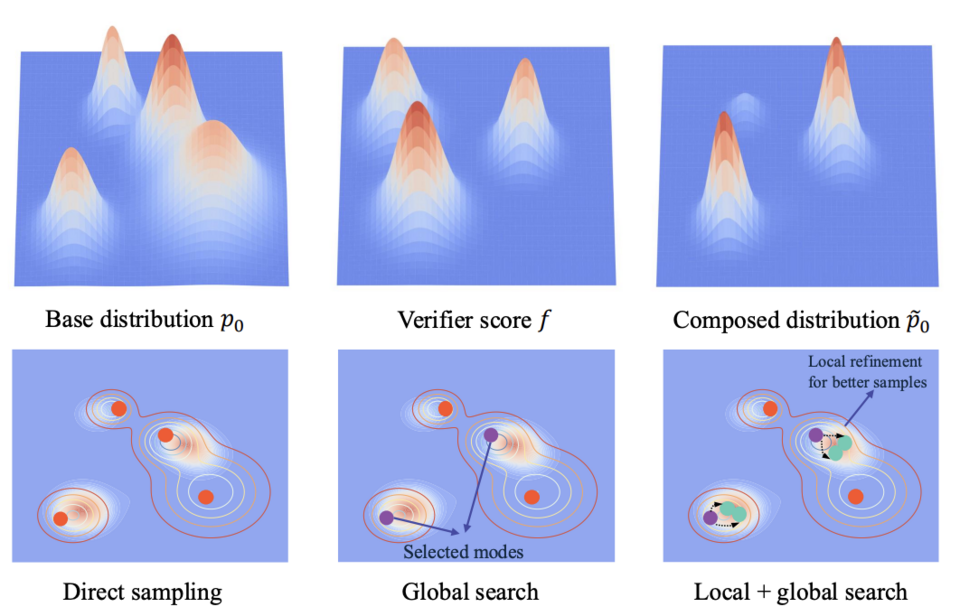
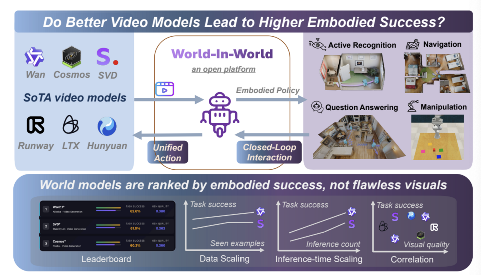
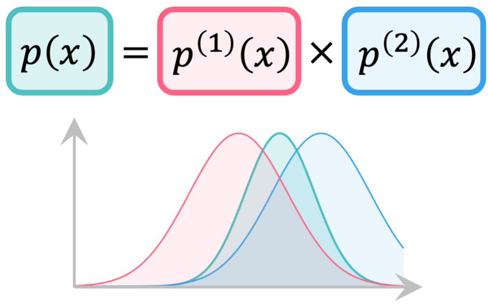

Reasoning with Sampling: Your Base Model is Smarter Than You Think
ICLR 2026 · Oral
reason_via_sampling.png
10 media files grouped by the listed publication venue and year.
10 of 10

ICLR 2026 · Oral
reason_via_sampling.png

ICLR 2026
slm.png

ICLR 2026
inference_time_scale.png

ICLR 2026
long_comp.png

ICLR 2026 · Oral
wow.png

ICLR 2026
poe.png
ICLR 2026
sail_preview.mp4

ICLR 2026
gpi.png

ICLR 2026 · Oral
ebt.png

ICLR 2026
flexmdm.png
No matches.